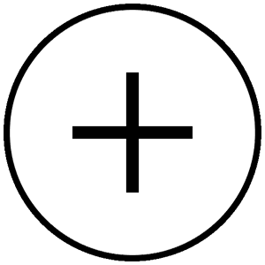

AIMIG
IN MY WAY
IN MY WAY
WEB制作で繋がる
- あらゆるビジネスを最適なWebデザインで表現
- 直感的で美しいデザインがユーザー体験を向上
- あらゆる業界・業種で効果を最大化するWeb戦略
これまでのWeb制作コストを大幅削減し、期待を超えるクオリティのサイトを実現。
これまでのWeb制作コストを大幅削減し、期待を超えるクオリティのサイトを実現。
コスト
大幅削減
圧倒的な
表現力
商材の
成果UPに
貢献
yui
miyoshi
海外ロケを
簡単に実現
撮影許可が
難しい場所も
可能
スタラボのCGフォトリアルサービスは、御社の商材をCG写真で納品するサービスです。 食品、衣類、事務用品から、建物の外観・内観まで、業界問わずにCG化が可能。
スタジオ撮影やロケ撮影の労力から解放され、圧倒的な表現力のある写真で訴求力も抜群。商材の広告効果改善からブランディングまでを後押し致します。
アドピー対策
アドピー対策の効果
アドピー対策
効果的なアドピー対策
アドピー対策の基礎知識
アドピー対策の実践方法
アドピー対策の未来
最新のアドピー対策とは？
アドピー対策
アドピー対策の効果
アドピー対策
効果的なアドピー対策
アドピー対策の基礎知識
アドピー対策の実践方法
アドピー対策の未来
最新のアドピー対策とは？
私たちは独自のデザインアプローチにより、
ユーザーの心をつかむ魅力的なWebサイトを制作します。
視覚的に美しいだけでなく、
ユーザーが直感的に操作できるUI/UXを追求。
ビジネスの成果に直結するデザインを提供します。
ブランドイメージを最大限に引き出し、
効果的なコンテンツ配置やデザイン戦略により、
訪問者のエンゲージメントを高めます。
一貫したデザインで、
ビジネス成長を加速させるWebサイトを実現します。
私たちは独自のデザインアプローチにより、
ユーザーの心をつかむ魅力的なWebサイトを制作します。
視覚的に美しいだけでなく、
直感的に操作できるUI/UXを追求。
ビジネスの成果に直結するデザインを提供します。
ブランドイメージを最大限に引き出し、
効果的なコンテンツ配置やデザイン戦略により、
訪問者のエンゲージメントを高めます。
アドピー対策
アドピー対策の効果
アドピー対策
効果的なアドピー対策
アドピー対策の基礎知識
アドピー対策の実践方法
アドピー対策の未来
最新のアドピー対策とは？
アドピー対策
アドピー対策の効果
アドピー対策
効果的なアドピー対策
アドピー対策の基礎知識
アドピー対策の実践方法
アドピー対策の未来
最新のアドピー対策とは？
equalsが生まれるまで
詳細を見るコンセプトメイク
どのような目的で制作するのか、あなたの想いをお聞かせください
ネットの泡を絞るようにして手に取ります。手についた泡を集め、手のひらでボールを作るように丸く転がします。
手や指で肌をこすらず、泡でマッサージするように優しく顔を洗います。そのまま20秒ほど待ち、ぬるめのお湯で洗い流します。
コンセプトメイク
どのような目的で制作するのか、あなたの想いをお聞かせください
ネットの泡を絞るようにして手に取ります。手についた泡を集め、手のひらでボールを作るように丸く転がします。
手や指で肌をこすらず、泡でマッサージするように優しく顔を洗います。そのまま20秒ほど待ち、ぬるめのお湯で洗い流します。
equals Balancing Face Soapは、からだや髪にもお使いいただけます。
タオルやボディスポンジで泡立ててからご使用ください。


人のからだに近い塩分濃度
無添加・天然由来成分のみ
海塩30%による収れん効果
最後まで素材の良さを保つ
溶け崩れしにくく長持ち